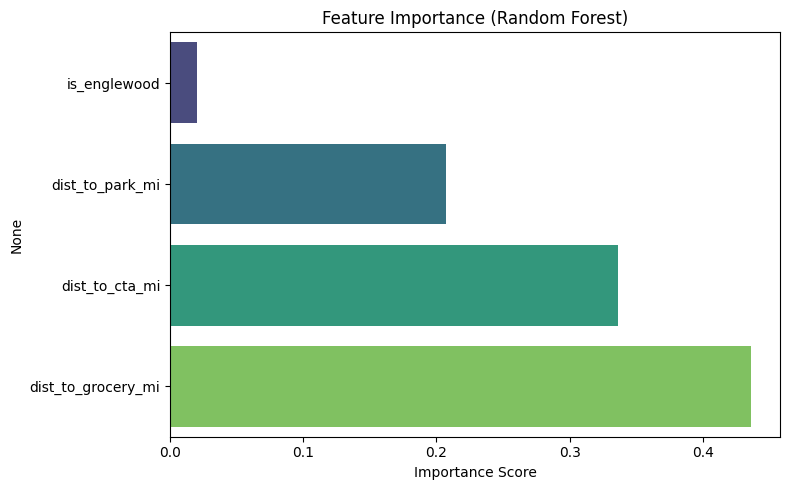
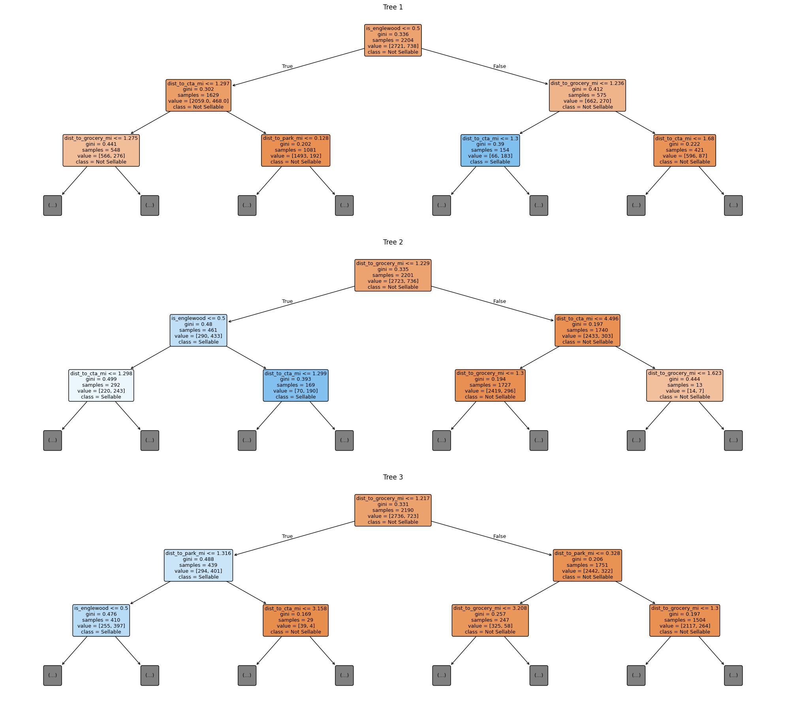

My Machine Learning Model Results
Model Performance for the Logit Model With Interaction
Here are some evaluation metrics:
- Accuracy: 94%
- Precision: 0.91
- Recall: 0.87
Feature Importance

Random Forest Trees

Sellable Plots in Line with Model